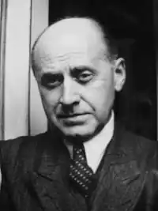
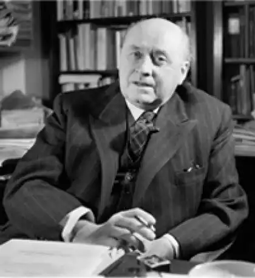

Готтфрід Бенн
(1886 — 1956)
німецький письменник Народився в Мансфельді (Браденбург) в родині протестантського священика. Крім Ґотфріда, в родині було ще шестеро дітей. Після здобуття початкової освіти у Франкфурті-на-Одері Ґотфрід спочатку вивчав теологію та філософію в Марбурзькому та Берлінському університетах, а з 1905 року перейшов на медичний факультет, спеціалізувався на венерології, дерматології, психіатрії та патологоанатомії, через сім років навчання отримав вчену ступінь. Деякий час працював військовим лікарем, а потім паталогоанатомом у берлінських лікарнях. Підчас Першої світової війни, з 1914 по 1917 pp., Бенн служив військовим лікарем у Бельгії, а після її закінчення повернувся до лікарської практики у Берліні. Починаючи з 1910 p., Бенн дебютував і як поет, вже першими збірками здобувши неабияку літературну популярність. З 1932 р. Бенн став членом Прусської академії мистецтв. У ці роки він пережив короткочасне захоплення ідеями гітлеризму, хоча вже через рік публічно заявив про свою опозиційність нацистській ідеології, через що, впродовж наступного десятиліття був обмежений у можливості друкуватись, а в 1938 р. його виключили з палати письменників рейху. З 1935 р. Бенн служив у вермахті штабним лікарем. Після поразки фашистської Німеччини Бенн знову зайнявся лікарською практикою в Берліні і відмовився від неї тільки в 1953 р., за три роки до смерті. Ідейний світогляд Бенна сформувався під сильним впливом філософії Ф. Ніцше, О. Шпенглера та інших представників "філософії життя", а також філософської антропології і глибинної психології. Бенн був глибоким скептиком як щодо розвитку окремої особистості, так і людської цивілізації загалом. Услід за Ніцше він заперечував досягнення прогресу, історії, гуманізму, раціонального знання; у людині він бачив замкнуту в собі і нездатну створити нові духовні ідеали істоту: "Йдеться вже не про розклад окремої особистості, і навіть не про старість раси, континенту, соціального устрою чи системи — трапилось щось ще страшніше: відчувається відсутність майбутнього для цілого проекту творіння", — писав Бенн. Його поглядам на історію та культуру був властивий біологізм, що проводив аналогію між історією та біологічними процесами, ірраціональними і некерованими у своїй основі. Бенн вважав також, що людство з самого початку обрало хибний шлях історичного розвитку, під яким він мав на увазі розвиток інтелектуальний і якому як альтернативу протиставляв почуттєву сферу сприйняття людини, зауважуючи, що рівні нервової системи людини, які відповідають за інстинкти, набагато давніші та досконаліші від тих, які народжують думку (тобто інтелектуальних). Нігілізм і скептицизм — це й рушійні складники літературних поглядів Б., що сформувалися під впливом експресіонізму. На відміну від значної частини німецьких експресіоністів, які поділяли ілюзію про можливість побудови справедливого соціального устрою, Бенн рішуче заперечував цю ідеологічну утопію, іронічно порівнюючи "вічний мир на Землі" з "вічною весною на Північному полюсі". "Сподіватися, — підкреслював він, — означає мати хибні уявлення про життя, про те, що воно вимагає і що може запропонувати..." Подібні песимістичні настрої пронизують перші поетичні збірки Бенна. "Морг" ("Morgue", 1912) і "Тіло"("Fleisch", 1917), в яких він звертається до людини як знеособленого предмета, мертвого тіла. Таким же сенсаційним, антираціональним змістом вирізнялися й наступні поетичні збірки Бенна — "Сміття"(1919), "Розщеплення" (1925) і книжка оповідань "Мозок" ("Gehirne", 1916). У статті "Чи можуть поети змінити світ?" ("Konnen Dichter die Welt verandern?", 1931) Бенн виступив проти соціально спрямованої поезії, віддаючи перевагу не тенденційності змісту, а досконалості художньої форми твору. У другий період своєї творчості, який тривав від 30-х pp. і до поразки фашистської Німеччини у війні, Бенн написав статтю "Після нігілізму" ("Nach dem Nihilismus", 1932), яка була сприйнята в літературних колах як данина прихильності нацистській ідеології. У статті йшлося про антропологічну революцію у розвитку людства, про народження людини нового типу, що звільнилася від кайданів старої цивілізації, відкинула її дискредитовані моральні цінності і розвивається в унісон з природними, біологічними силами. Але вже в 1937 р. Бенн написав есе "Пивничка Вольф" ("Weinhaus Wolf, опубл. 1949), в якому не лише зрікся нацистських гасел, а й створив похмурий, гротескно-символічний образ фашистської держави. У цей період Бенн написав також прозовий фрагмент "Роман фенотипа" ("Roman des Phanotyp. Landsberger Fragment", 1944), а також три збірки віршів, які йому, попри цензурні обмеження, вдалося видати невеликими тиражами, частково за свій рахунок: "Ausgewahlte Gedichte" (1936), "Gedichte" 936) і "Zweinundzwanzig Gedichte" (1943). Із цих поетичних збірок постає образ людини, ізольованої від світу, приреченої на самотність і розчарування. У поезії цього часу значне місце посідають автобіографічні мотиви. У повоєнній творчості Бенна, як і раніше, домінують настрої нігілістичного песимізму, в художньому аспекті він залишається прихильником експресіонізму, поетика якого частково поєднується тепер з прийомами сюрреалістичної техніки письма. Як і раніше, він пропагує перевагу форми над змістом, а його доповідь "Проблеми лірики" ("Probleme der Lyrik"), виголошена ним в 1951 р. у Марбурзькому університеті, фактично стала маніфестом модернізму, в якому Бенн доводив переваги абстрактного мистецтва і проголошував "артистизм" художньої форми як першочергової мети митця. У практичній площині ці тези втілилися в нових збірках поезій Бенна: "Статичні вірші" ("Statische Gedichte", 1948), "П'яний потік" ("Trunkene Flut", 1949), "Фрагменти. Нові вірші" ("Fragmente. Neue Gedichte", 1951), "Дистиляції. Нові вірші" ("Destillationen. Neue Gedichte", 1953) та ін. На думку І.Павлової, "головне значення у вірші Бенн надавав слову як такому, що породжує широкий ареал асоціацій і значень, а не зв'язку слів, не розвитку думки. Вірші Бенна зазвичай "розгортають", а не розвивають цю думку, оскільки усе, що виражене у вірші, якоюсь мірою міститься в кожному його рядку. Вірш формально є замкнутим, статичним, заокругленим цілим. Статика, призупинений рух виступають і однією з головних тем, що у різних формах варіюється в поезії Бенна. Статичні образи Бенна не мали проекції в майбутнє. Проте вони довгий час обирали собі іншу сферу — пам'ять про минуле, юнґівське "колективне підсвідоме", міф... У його поезії суспільству протиставлена "природа", гуманістичним ідеалам — стихійні начала, сучасній цивілізації і демократії — праіснування". З-поміж прозових творів Бенна останнього періоду творчості виділяються розлоге есе "Птоломеєць. Берлінська новела, 1947" ("Der Ptolemaer, Berliner Novelle, 1947", 1949), в якій письменник розмірковує про війну як приклад того, що сучасна людина остаточно втратила моральні орієнтири, і автобіографічний твір "Подвійне життя" ("Doppelleben", 1956). Поетична творчість Бенна справила значний вплив на розвиток повоєнної німецької поезії, ставши зразком для багатьох молодих поетів, що прийшли в цей час у літературу. У 1954 р. Бенну була присуджена премія імені Бюхнера.